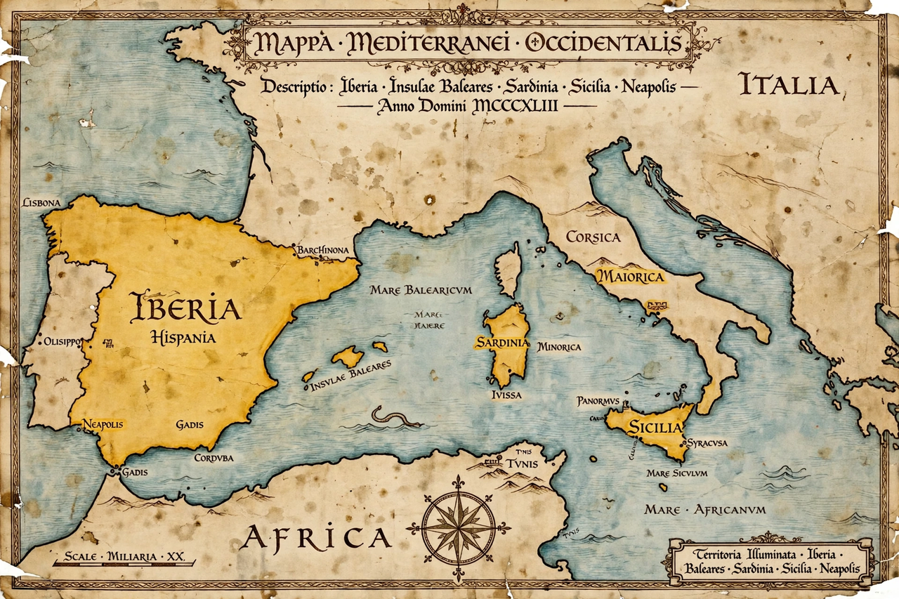

| Crown of Aragon | |
|---|---|
 | |
| Period | 1162/1164 – 1716 (de facto absorbed into Spain) |
| Common languages | Aragonese, Catalan, Latin, Spanish, Occitan, Greek, Italian, Sardinian |
| Religion | Roman Catholicism |
| Capital | No fixed capital; royal court itinerant (Zaragoza, Barcelona, Valencia, Naples at various times) |
| Government | Composite monarchy (pactist federal monarchy) |
| First ruler | Alfonso II of Aragon |
| Last ruler | Charles III (claimed) / Philip V (Nueva Planta decrees) |
| Established | Dynastic union of the Kingdom of Aragon and the County of Barcelona, 1162/64 |
| Disestablished | Nueva Planta decrees, 1707–1716 |
The Crown of Aragon (Aragonese: Corona d'Aragón; Catalan: Corona d'Aragó; Spanish: Corona de Aragón) was a composite monarchy in the western Mediterranean, formed by the dynastic union of the Kingdom of Aragon and the County of Barcelona in the 12th century. At its height in the 14th and 15th centuries it comprised, in Iberia, Aragon, Catalonia, Valencia, and the Balearic Islands, and across the Mediterranean, Roussillon, Sardinia, Sicily, Naples, and at times even the duchies of Athens and Neopatras in Greece. It was one of the major powers of medieval Europe and a great maritime and commercial empire.
The union originated in the betrothal (1137) of Petronilla, heiress of Aragon, to Count Ramon Berenguer IV of Barcelona; their son Alfonso II inherited both realms in 1162/64. His successors pursued expansion on two fronts. James I "the Conqueror" (r. 1213–1276) took Mallorca and the other Balearic Islands and the Kingdom of Valencia from the Muslims, and accepted the limitation of Aragonese ambitions north of the Pyrenees. Peter III seized Sicily after the Sicilian Vespers (1282), beginning a long rivalry with the Angevins and France. Later conquests added Sardinia and, under Alfonso V "the Magnanimous", the Kingdom of Naples (1442).
The Crown was a federation of kingdoms and territories, each keeping its own laws (fueros/furs), institutions, and representative assemblies (Corts/Cortes). The monarch swore to respect these liberties, a tradition of pactisme — government by contract — exemplified by the legendary Aragonese oath to the king. Institutions such as the Catalan Generalitat and the Consolat de Mar, whose maritime law code influenced the whole Mediterranean, reflect the Crown's legal and commercial sophistication. Trade through Barcelona, Valencia, and Palma made the Crown a hub of Mediterranean commerce, though competition from Italian cities and internal crises weakened it in the 14th–15th centuries.
The marriage of Ferdinand II of Aragon and Isabella I of Castile (1469) dynastically united the two great Iberian crowns, but Aragon retained its separate institutions under the Habsburgs. Attempts by Philip IV's minister Olivares to centralize provoked the Catalan Revolt of 1640. During the War of the Spanish Succession, the Aragonese territories backed the Habsburg claimant; after their defeat, Philip V abolished their institutions with the Nueva Planta decrees (1707–1716), formally ending the Crown of Aragon and integrating its territories into a centralized Spanish monarchy.
This article is a recreation from memory in the style of Wikipedia.